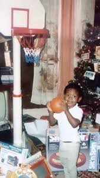

LeBron James was born on December 30 1984, in Akron, Ohio. As a kid, Lebron already had a passion for basketball. I think that the exact day his passion ignited was on Christmas day 1987, when his mother got him a basketball hoop for christmas.
Even since elementary school, LeBron was highly regarded as a basketball sensation. In highschool, he led St. Vincent-St. Mary High School's basketball team to three Ohio state championships. He was so great to the point that he was the cover of Sports Illustrated's magazine, which called him "The Chosen One". Finally, in the 2003 NBA draft, he was chosen as the first overall pick by the Cleveland Cavaliers.
| Date | Opponent | Points | W/L |
|---|---|---|---|
| January 7, 2003 | Villa Angela-St. Joseph | 40 | W |
| January 14, 2003 | Mentor | 50 | W |
| February 8, 2003 | LA Westchester (CA) | 52 | W |
| February 14, 2003 | Zanesville | 46 | W |
| March 8, 2003 | Central-Hower | 41 | W |
Rogers, J. (2024, December 24). LeBron James reminisces over viral throwback photo of himself getting basketball hoop for Christmas 1987. talkSPORT. https://talksport.com/basketball/1691636/lebron-james-christmas-gift-hoop-throwback-lakers-warriors/
Augustyn, & Adam. (2025, October 9). LeBron James | Biography, Championships, Stats, & Facts. Encyclopedia Britannica. https://www.britannica.com/biography/LeBron-James
ClutchPoints. (2019, December 11). High School LeBron James’ insane high School highlights [Video]. YouTube. https://www.youtube.com/watch?v=QEzt_vH2Yag
LeBron James - High school, *****, and exhibition stats | Basketball-Reference.com. (n.d.-b). Basketball-Reference.com. https://www.basketball-reference.com/players/j/jamesle01/lebron-high-school-*****-exhibition.html